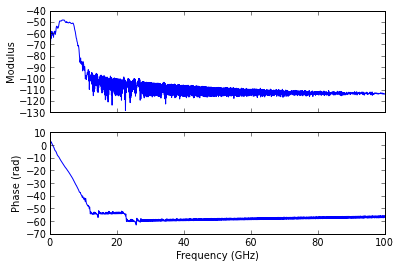
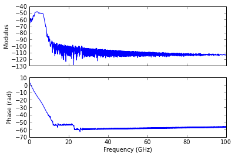

Multi-wall model¶
import time
from pylayers.util.project import *
import pylayers.util.pyutil as pyu
from pylayers.util.utilnet import str2bool
from pylayers.gis.layout import Layout
from pylayers.antprop.multiwall import *
from pylayers.antprop.coverage import *
from pylayers.network.model import *
Loading the layout¶
L=Layout('TA-Office.ini')
try:
L.dumpr() # load graphs
except:
L.build()
L.dumpw()
Defining a radio link¶
We define :
- A a transmitter
- B a receiver
A=np.array((4,1)) # defining transmitter position
B=np.array((30,12)) # defining receiver position
Ploting the scene¶
# figure instanciation
f = plt.figure(figsize=(25,25))
ax = f.add_subplot(111)
r = np.array((A,B))
f,ax = L.showG(fig=f,ax=ax,graph='s')
ax.plot(A[0],A[1],'ob')
ax.plot(B[0],B[1],'or')
ax.plot(r[:,0],r[:,1])
a = plt.axis('off')
Find the intersection between the “direct” path and the walls¶
The function angleonlink returns the list of intersected segments and the corresponding incidence angles with respect to the segment normal.
nstr,thrad=L.angleonlink(A,B)
print nstr
print thrad
[34 36 41 67 72]
[ 0.40024066 0.40024066 0.40024066 1.17055567 1.17055567]
Computing the Multi-wall model¶
The multi-wall model computation returns losses and LOS excess delay for orthogonal and parallel polarization
f = 2.4
r= np.array((B,B))
Lwo,Lwp,Edo,Edp=Loss0_v2(L,r,f,A)
print 'Losses orthogonal polarization \t %g dBm' %(Lwo[0])
print 'Losses parallel polarization \t %g dBm' % (Lwp[0])
print 'Excess delay orthogonal polarization \t %g ns' % (Edo[0])
print 'Excess delay parallel polarization \t %g ns' %Edp[0]
Losses orthogonal polarization 27.7333 dBm
Losses parallel polarization 16.0573 dBm
Excess delay orthogonal polarization 2.23113 ns
Excess delay parallel polarization 2.12364 ns
Coverage class¶
By extension, the multi-wall model can also be used to perform a full coverage of a Layout given a transmitter position.
C = Coverage()
C.L = L # set layout
C.tx = A # set the transmitter
np.shape(C.grid)
(3200, 2)
t1=time.time()
C.cover()
t2=time.time()
print 'Coverage performed in ', t2-t1, 's'
Coverage performed in 15.3641560078 s
For Orthogonal polarization
C.showPower(polarization='o')
C.showEd(polarization='o')
 

For parallel polarization
C.showPower(polarization='p')
C.showEd(polarization='p')